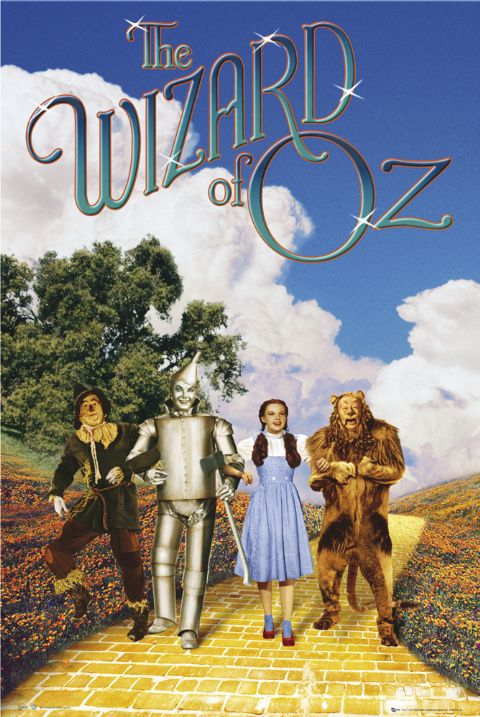

绿野仙踪（The Wizard of Oz，1939）
一句话短评：
内容简介：
- 小女孩桃乐丝·盖尔（Judy Garland 饰）随叔叔、婶婶住在堪萨斯州中部的农场。某天，龙卷风袭来，为找到心爱的小狗，桃乐丝没能及时躲藏。强大的龙卷风将桃乐丝藏身的小木屋卷入空中。不知经过多久，小木屋终于落到地面，而且把一个邪恶的女巫也给压死了。在善良的北方女巫的指点下，桃乐丝和小狗启程前往魔法师奥兹（Frank Morgan 饰）所居住的翡翠城，祈求他能帮助自己回家。路上，桃乐丝遇见了没有脑子的稻草人（Ray Bolger 饰）、缺少心脏的铁皮人（Jack Haley 饰）以及胆小如鼠的狮子（Bert Lahr 饰），为了实现各自的愿望，他们随桃乐丝一同前行。一路上经历千难万险，更有邪恶的西方女巫处处阻挠，他们的愿望最终能否实现呢？
- 本片根据美国同名童话改编。
短评：
- 童话会让孩子们相信除了自己所见之外，还存在着另一个与众不同的世界。 ——袁牧
可播放资源：
- 哔哩哔哩 免费观看
- https://www.bilibili.com/bangumi/play/ss33074?bsource=douban